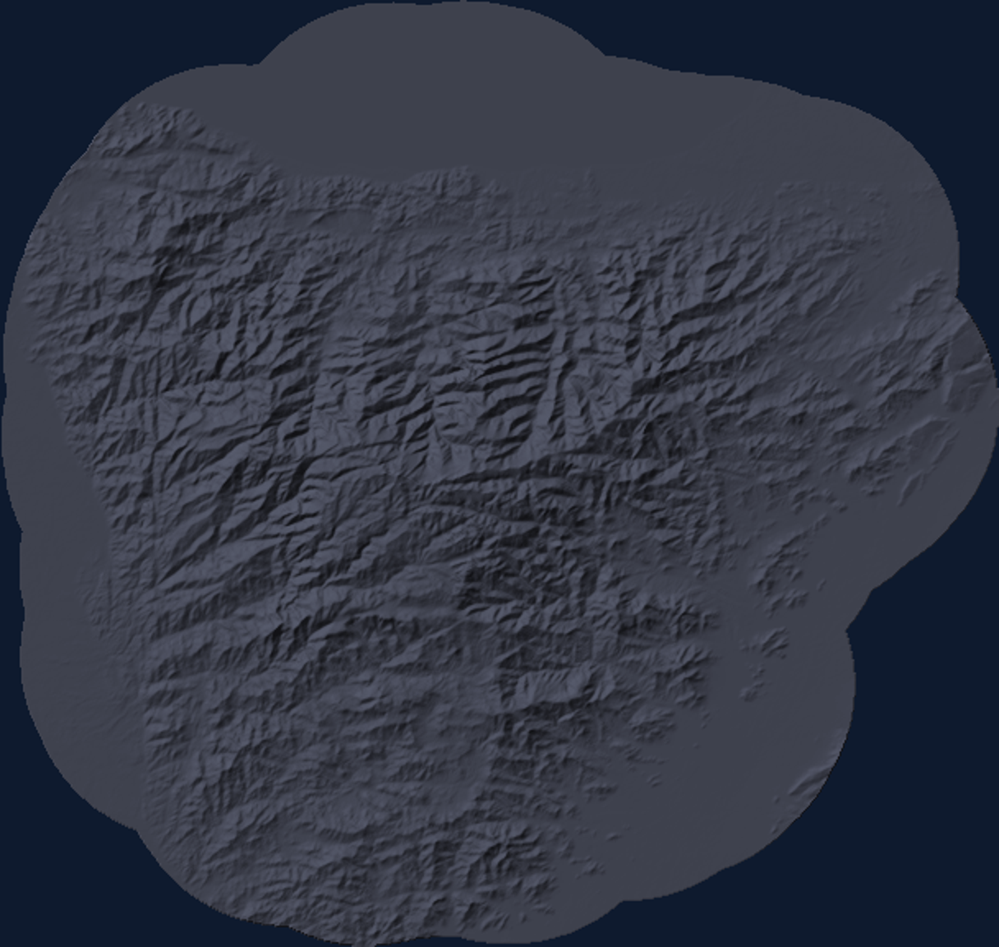
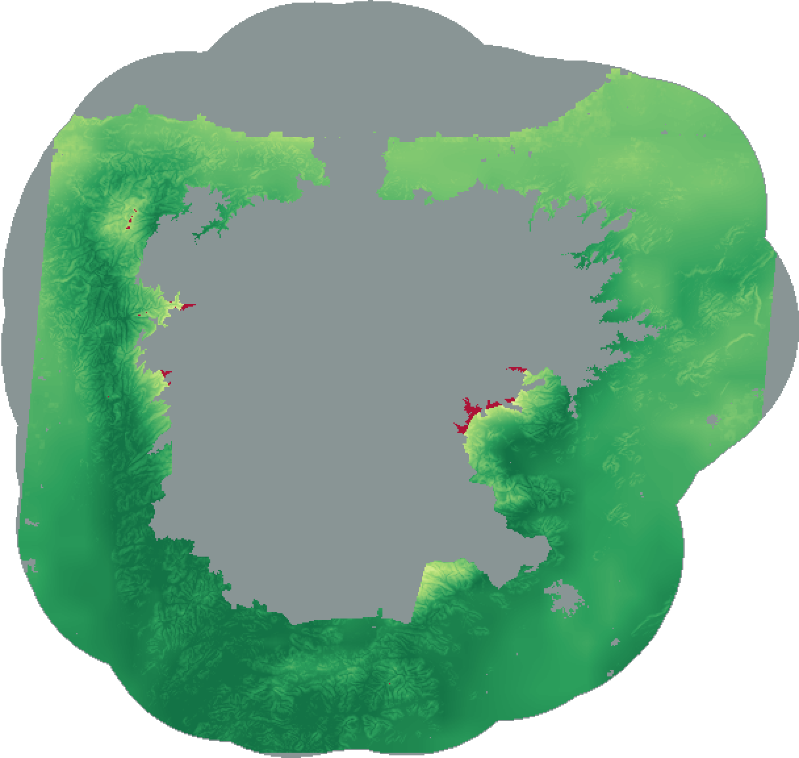

Resultados · Mapa de aptitud (SIG)
Aptitud cacaotera — Sierra Nevada de Santa Marta
Objetivo: zonificar dónde es biofísicamente apto cultivar cacao, combinando clima, suelo y relieve con los pesos de un panel de 4 expertos.
Precipitación.32
Temperatura.24
pH del suelo.12
Pendiente.19
CR 0.07 · consistente
Método: AHP para pesos + funciones de idoneidad (SIG). Publicado hace 2 días.


Idoneidad biofísica
Alta · ≥ 70
Moderada · 45–70
No apta · < 45
Exclusión legal (PNN, páramo)
0 25 km
78 %
Haz clic en cualquier punto del mapa para ver su % de viabilidad. Este mapa no muestra las capas de entrada, solo el resultado.
Alta aptitud898 k ha
Moderada3 450 ha
No apta1 988 ha
Exclusión legal804 k ha
78 %
Alta aptitud
10.7703, -74.0241
cerca de Palmor
Índice de idoneidad 0–100, no una probabilidad. El desglose por criterio y los valores crudos solo los ve el dueño del proyecto.